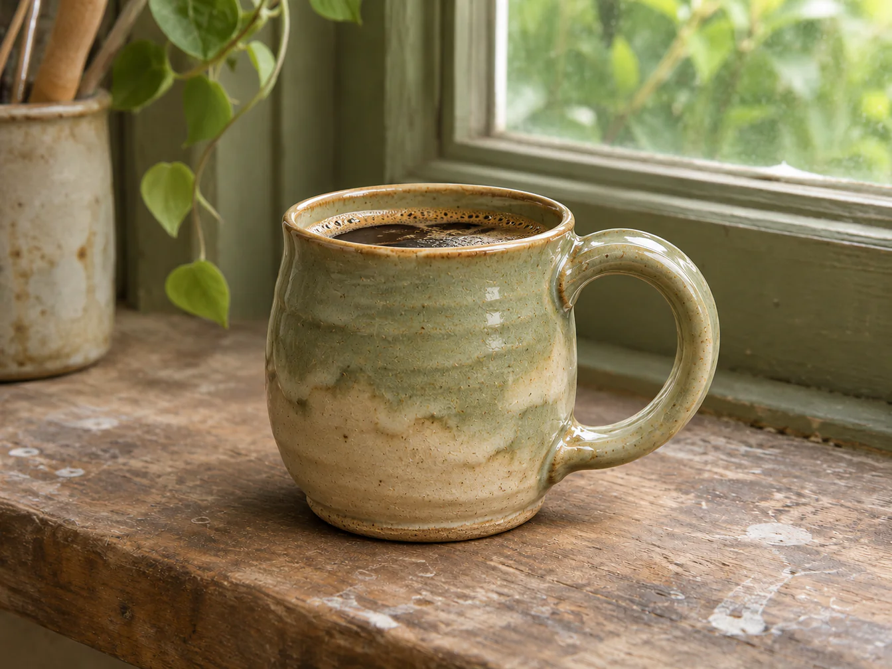
Az első poharam
Felnőttként ültem először koronghoz. Az első poharam összecsuklott, a következőnél pedig az oktatóm megmutatta, hogyan támasszam meg a könyökömet. Az első sikerült poharam kicsit ferde lett, de sokáig abból ittam otthon.
Fehér Dóra keramikus vagyok. Szeretettel várlak Szentendrén, a Duna korzón lévő műhelyboltomba. Itt készülnek a bögréim, tálaim és tányérjaim, és itt ülnek először koronghoz a vendégeim. Ha pedig magad is kipróbálnád a korongozást, foglalj időpontot a foglalkozásaim egyikére és megmutatom, hogyan kezdd.
Megnézem a foglalkozásokat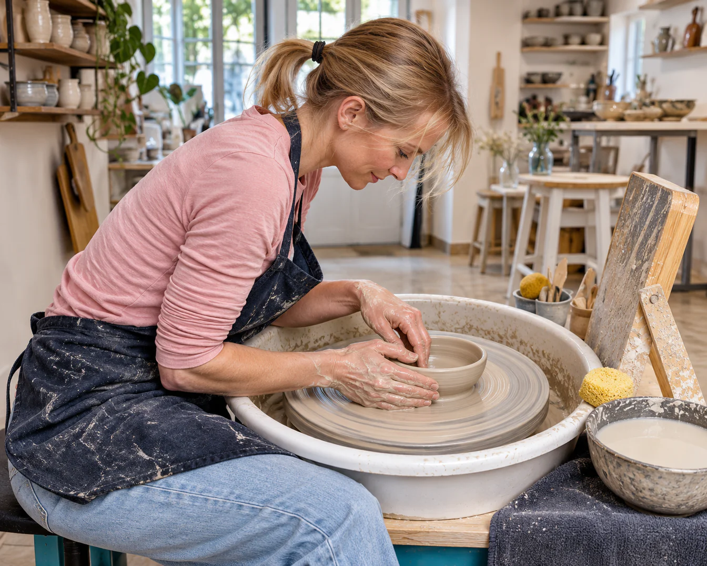

Felnőttként ültem először koronghoz. Az első poharam összecsuklott, a következőnél pedig az oktatóm megmutatta, hogyan támasszam meg a könyökömet. Az első sikerült poharam kicsit ferde lett, de sokáig abból ittam otthon.
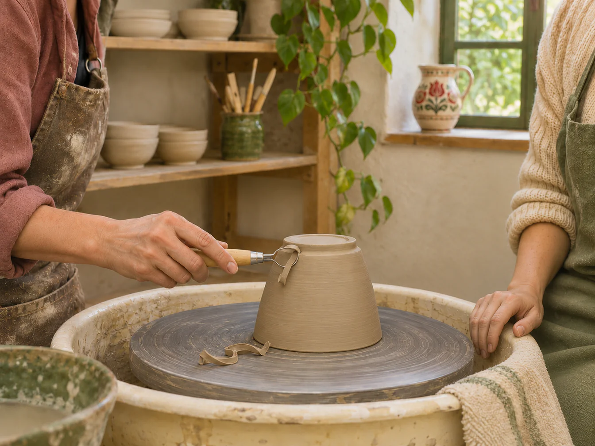
Eredetileg tervezőgrafikus vagyok. Munka mellett, az Apró Kör Kerámiaműhelyben Farkas Júliától tanultam meg korongozni, kerámiákat készíteni, talpazni, égetni és mázazni.
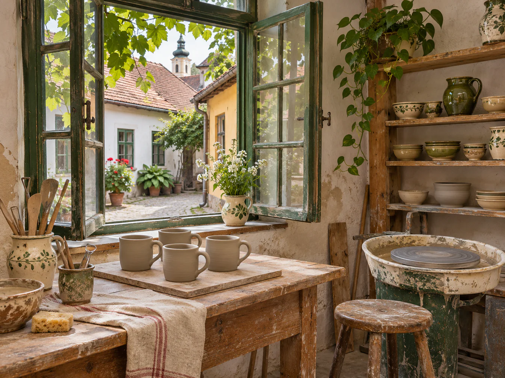
Amikor először beléptem a régi udvari műhelybe, elképzeltem a száradó bögréimet az ablak alatti asztalon. Azt is láttam, hol férne el a korong annak, aki most próbálja ki először. 2024 tavaszán megnyitottam az Agyagpadot.
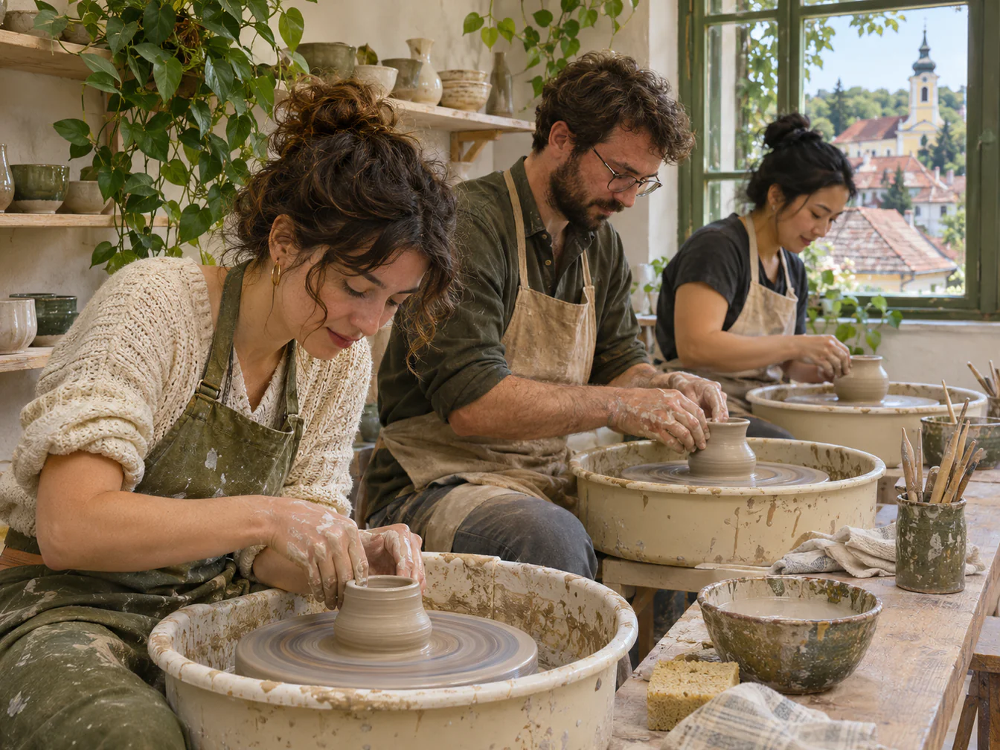
Az első kóstolók végén többen megkérdezték, visszajöhetnek-e gyakorolni. Nekik indítottam el a négyhetes kezdő tanfolyamot. Később kisebb céges csapatokat is elkezdtem fogadni.
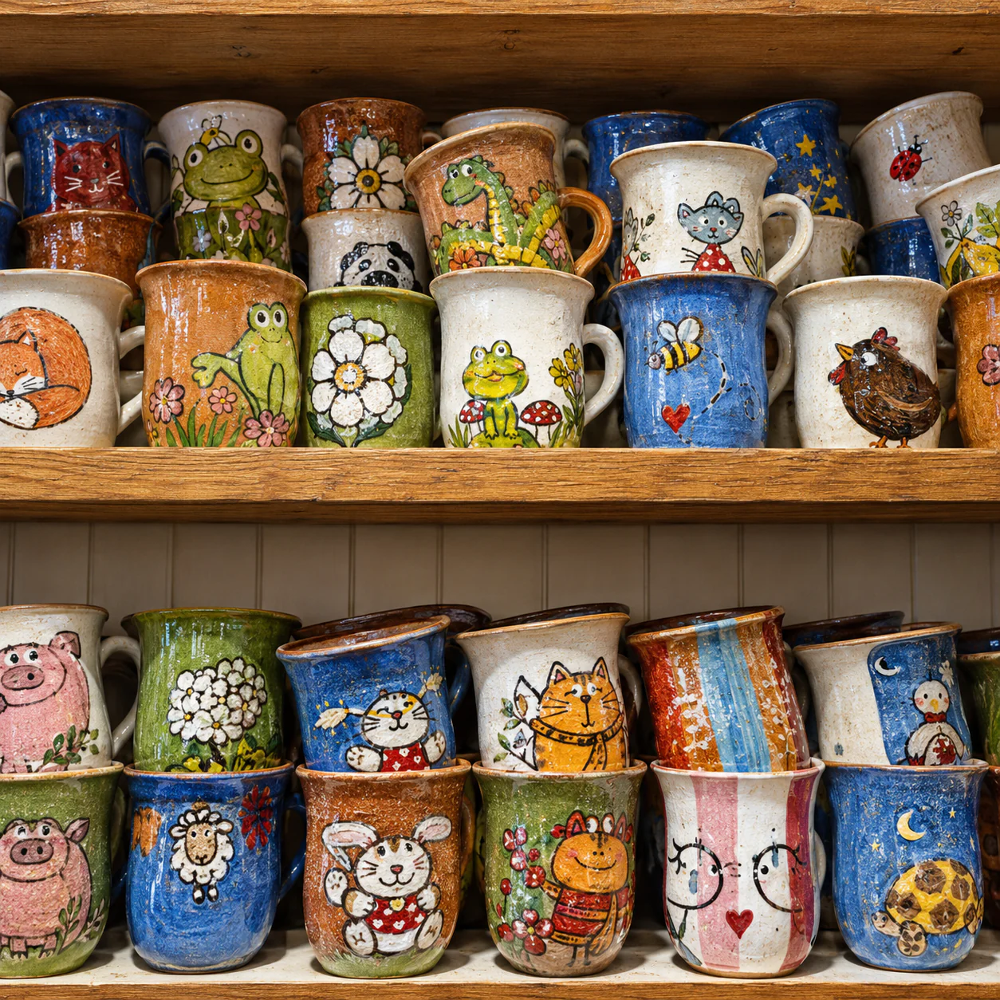
Egy bögrénél az is számít, milyen érzés megfogni. Olyan tárgyakat készítek, amikért szívesen nyúlsz nap mint nap.
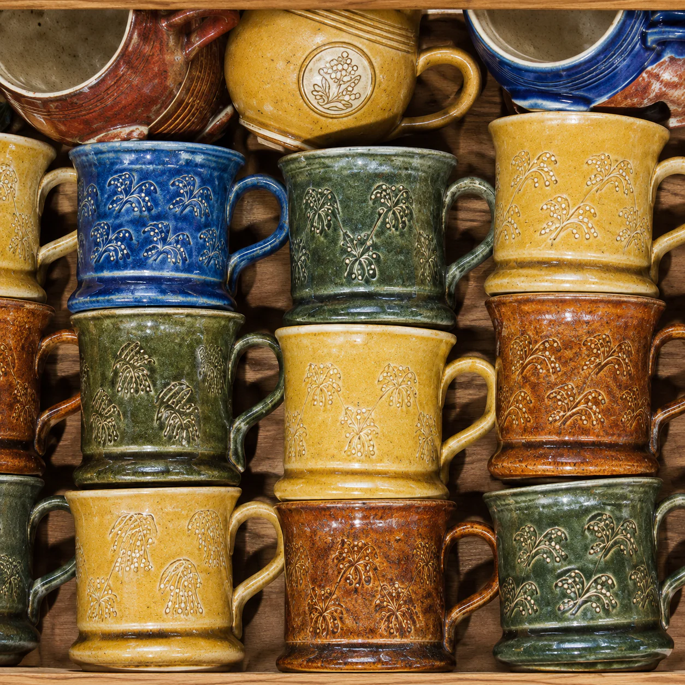
Két bögre formája vagy máza kissé eltérhet. A boltban egymás mellett is megnézheted őket.

Megmutatom a mozdulatot, aztán hagyom, hogy kipróbáld. Ha elakadsz, segítek megtalálni, min érdemes változtatnod.
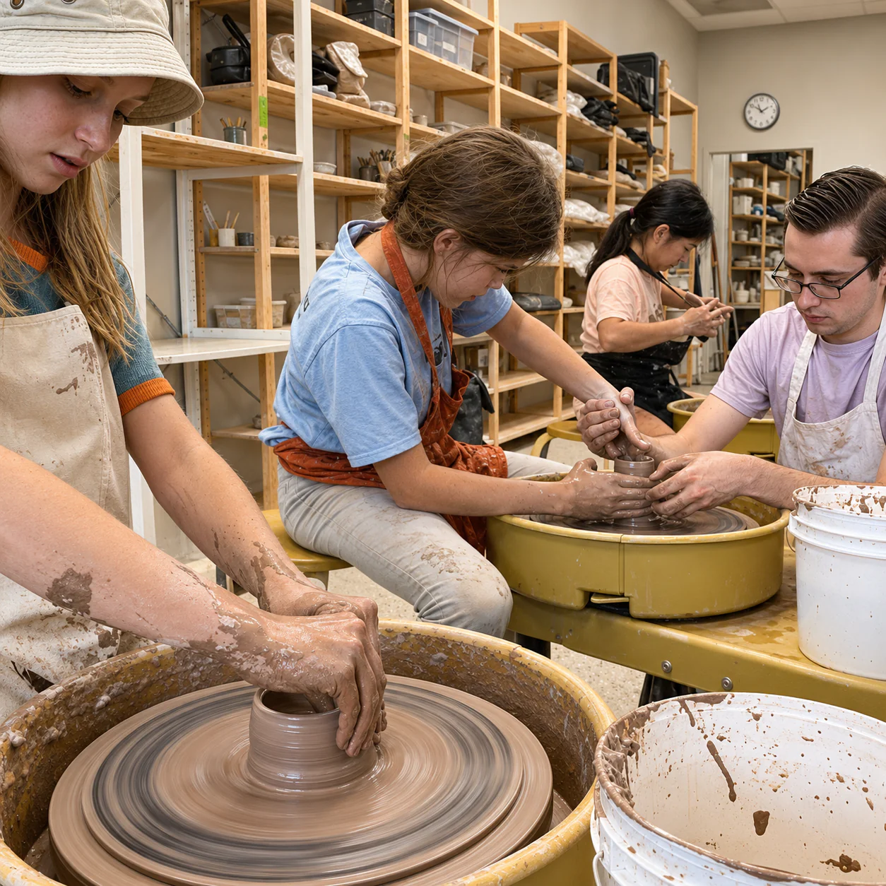
Legfeljebb hatan vagytok egy alkalmon. Így van időm odaülni melléd, és neked is van időd újrapróbálni a mozdulatot.
Nézz körül a boltban, és pillants bele abba is, hogyan készülnek a polcokra szánt darabok.
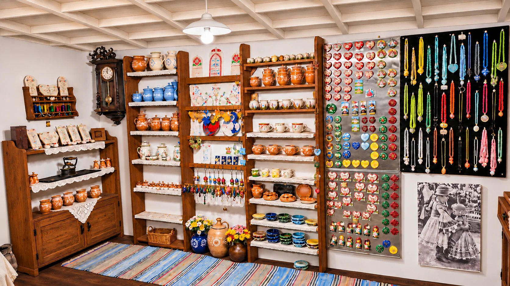
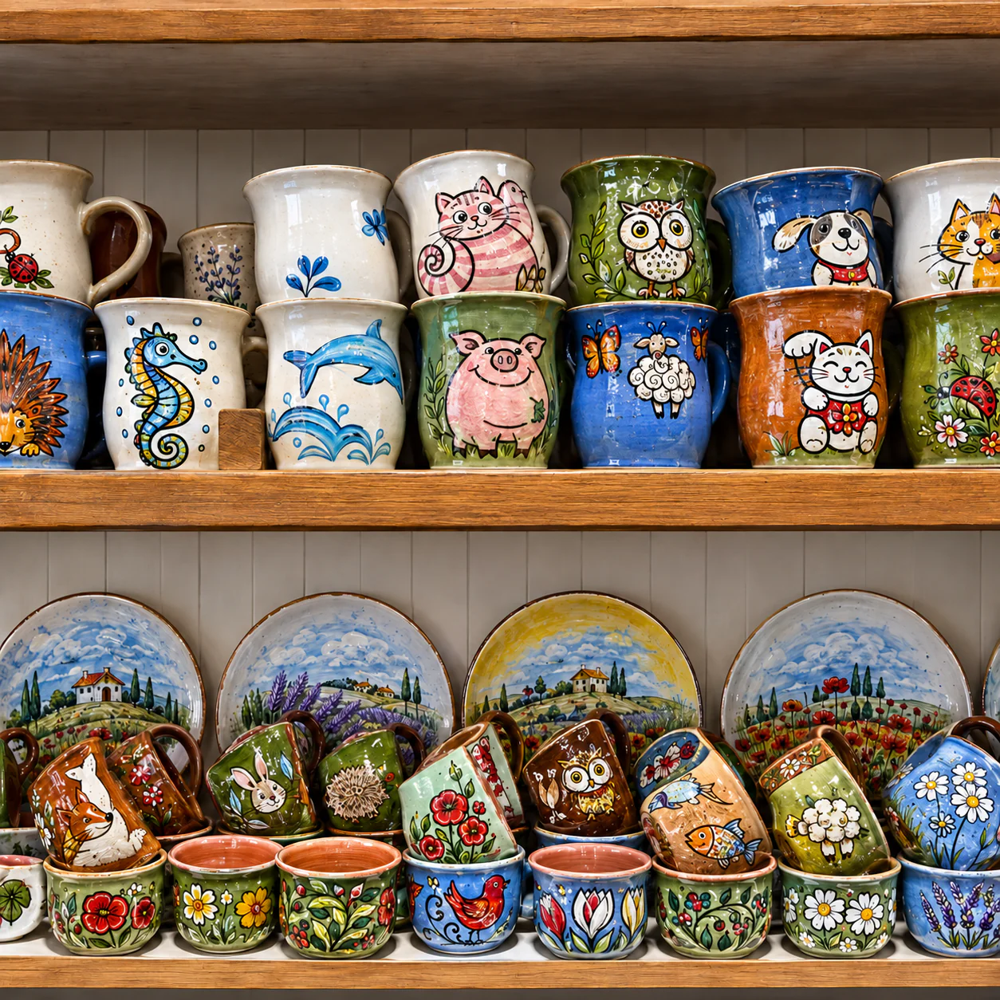
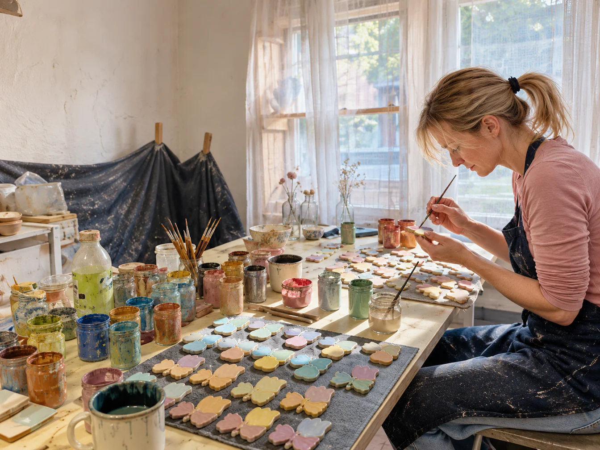
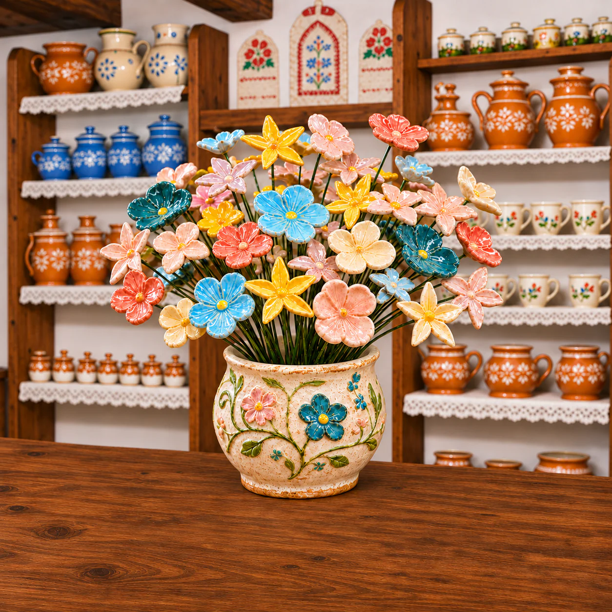

A műhelybolt a Duna korzó felől, az utcáról könnyen megközelíthető. Nyitvatartási időben betérhetsz, és kézbe is veheted a darabokat.
A polcokon tálakat, tányérokat, poharakat és bögréket találsz. Készítek hűtőmágneseket és kerámiavirágokat is. Ezeket a darabokat a foglalkozások közötti szabadidőmben készítem eladásra.
2000 Szentendre, Duna korzó 14.
Csütörtök–vasárnap, 10:00–18:00
Vélemények a vásárlóimtól
„A boltban kézbe vettem pár ugyanolyan mintájú bögrét, és végül azt vittem haza, amelyiknek a füle a legkényelmesebb volt. Azóta szinte minden reggel azt veszem elő.”
Ildikó
„Anyukámnak a születésnapjára kerestem ajándékot az Agyagpad Műhelyboltban. Egy egyedi kerámia mézes csuporra esett a választásom. Még három kerámia virágot is választottam mellé. Anyukám nagyon örült a különleges ajándéknak és nagyon meghatódott.”
Anna
A háromórás kóstolón az alapoktól indulunk. Megmutatom, hogyan igazítsd az agyagot a forgó korong közepére, és hogyan tartsd a kezed, amikor formázni kezded. Aztán te próbálod ki. Ha az agyag megbillen, segítek megtalálni azt a mozdulatot, amivel újra egyenletesen foroghat.
Ha több időt szeretnél a gyakorlásra, a négyhetes kezdő tanfolyamon hétről hétre visszaülhetsz a koronghoz. Minden alkalommal más kerámiát készítesz, közben újra előveheted azt a mozdulatot, amelyik először nehezen ment. A negyedik alkalomra az a cél, hogy egy darabot minél önállóbban tudj megformázni.
A saját készítésű kerámiádra egyedi mázat és mintát is kérhetsz. A kész darabokat az utolsó foglalkozás után két héttel, személyesen veheted át a szentendrei műhelyboltban.
Megnézem a foglalkozásokat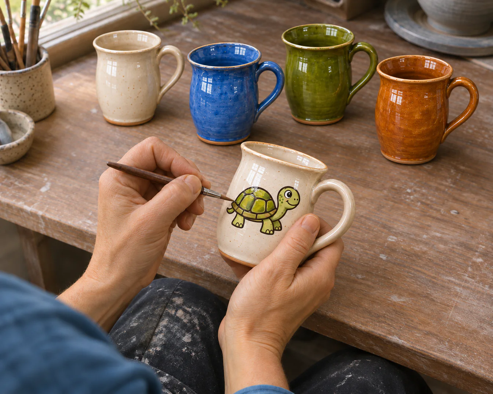
Szeretném, ha rendszeresen indulnának új háromórás korongozó kóstolók és négyhetes kezdő tanfolyamok. Az aktuális időpontokat a Tanfolyamok oldalon találod.
Céges csapatépítőknek is szívesen adok helyet a műhelyben. Én vezetem a korongozást, így a kollégáid kezdőként is bekapcsolódhatnak. Ha cégképviselőként vagy projektmenedzserként közös programot szervezel, írd meg, mikor és hányan jönnétek. Ha több csoporttal érkeznétek, külön napokat egyeztetünk.
Felveszem Dórával a kapcsolatot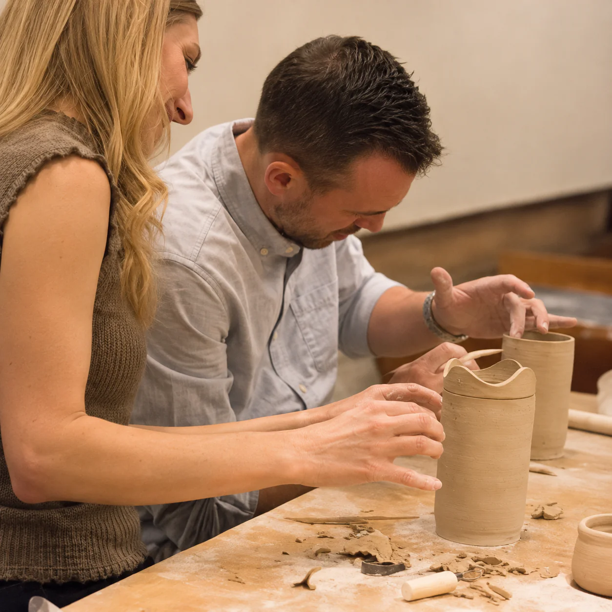